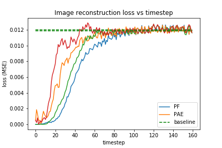
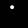
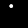
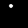
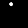

Configuration: {'wall_action': 'pass', 'ball_action': 'bounce', 'n_bodies': 1, 'radius': 2.0, 'mass': 1.0, 'measurement_noise': 0.0003, 'radius_mode': 'uniform', 'dynamics_noise': 0.01, 'mass_mode': 'uniform'}

| Ground truth |
Particle Filter |
PF Sample |
Predictive AE |
PAE Sample |
|  |
|
 |
 |
 |